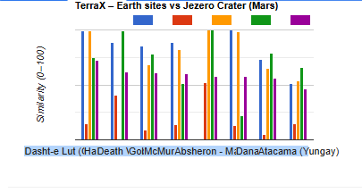
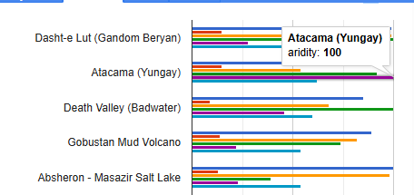
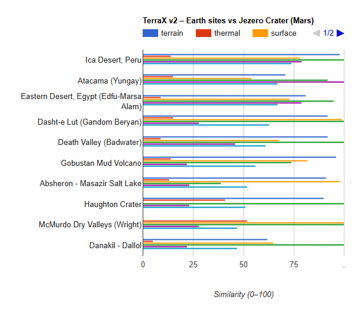
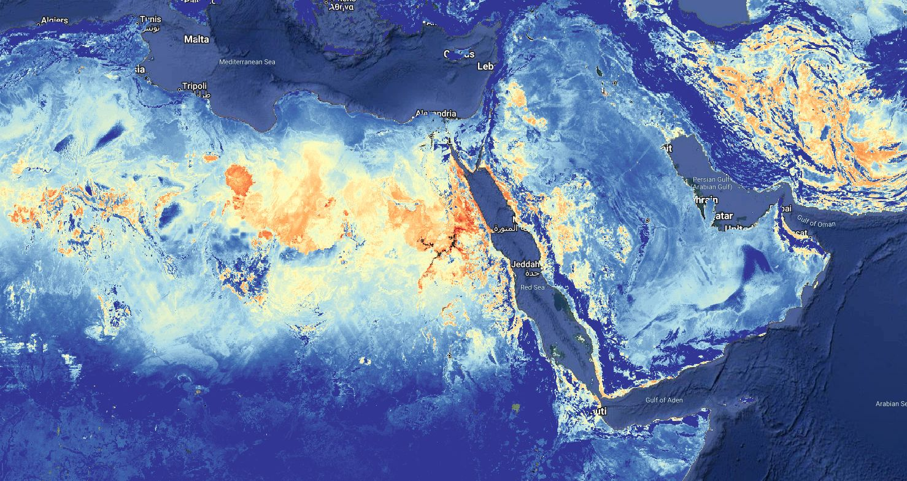
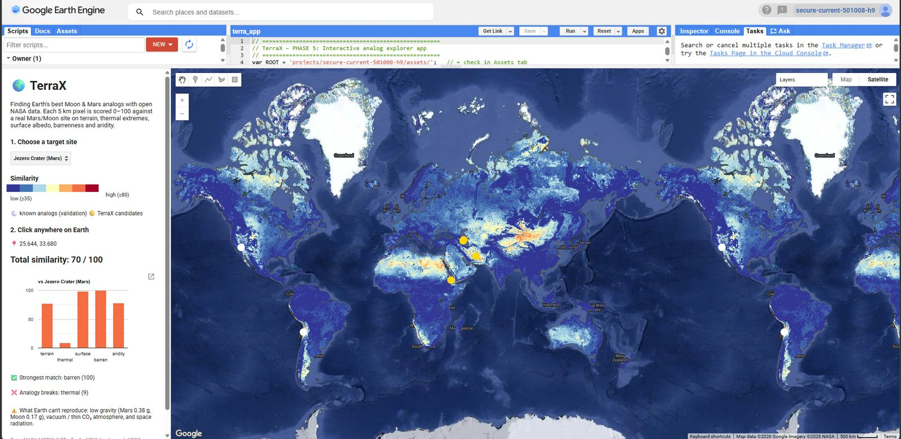
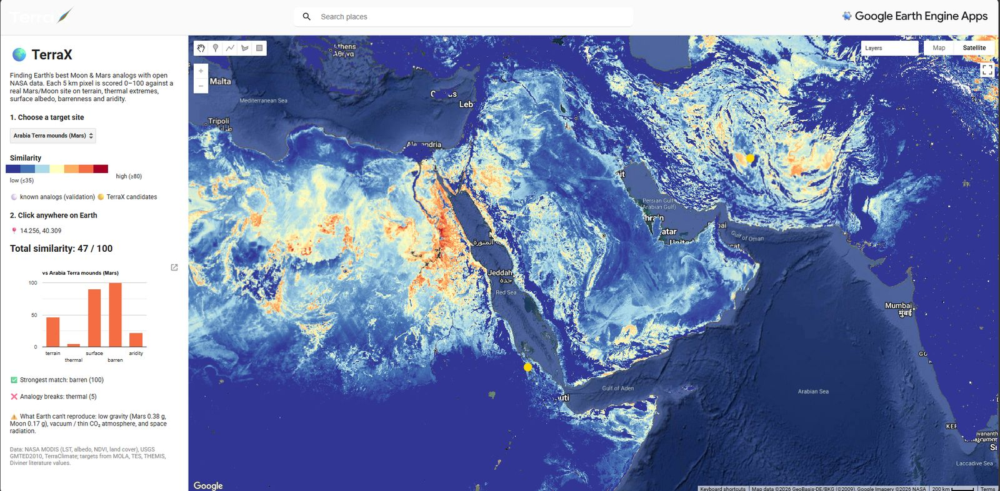

Terrain
Mean slope, roughness, local relief (500 m, 8×8 km patches)
Copernicus DEM + NASA SRTM (sites) · USGS GMTED2010 (global)
Landing, mobility, construction

NASA Space Apps Challenge 2026 · Vilnius
TerraX searched the entire Earth with open NASA data, rediscovered the Atacama on its own, found two less-studied Mars analogs in Peru and Egypt, and shows for any place on the planet exactly where it resembles Mars or the Moon, and where it does not.
Background: the 30 strongest hotspot regions vs Jezero Crater (magenta), v1 global map
Terrain, temperature, surface brightness, bare ground, dryness
Jezero, Gale, Arabia Terra, Chryse/Acidalia (Mars); lunar south pole near Shackleton (Moon)
The whole planet was scored, not a sample
The core Atacama, found without being told
The best match to Jezero Crater among our scored sites (v2)
A large, less-studied Mars-analog region
Best Earth match for the Moon vs for Mars: Earth is a weaker Moon analog
At the best Mars hotspots: where every analog breaks
NASA, ESA, USGS and TerraClimate datasets
01 · The challenge
NASA asked teams to use open Earth, Moon and Mars data to identify and characterise new terrestrial analogs for future Moon bases and Mars landing sites. Known analogs such as the Atacama Desert, Haughton Crater and Death Valley are well studied, but no place on Earth matches another planet perfectly, and the best analogs may be places nobody has examined.
The challenge asked for three things, which shaped every decision we made:
02 · Our method
We describe every place on Earth, Mars and the Moon with the same set of measurable numbers, a fingerprint. Comparing fingerprints tells us how similar two places are, dimension by dimension.
Mean slope, roughness, local relief (500 m, 8×8 km patches)
Copernicus DEM + NASA SRTM (sites) · USGS GMTED2010 (global)
Landing, mobility, construction
Day–night surface temperature swing, yearly max and min
NASA MODIS MOD11A2
Instrument and habitat stress
Albedo (brightness)
NASA MODIS MCD43A3
Proxy for dust and rock type
Vegetation index (NDVI)
NASA MODIS MOD13A1
Mars and the Moon have no plants
Mean annual rainfall 2013–2022
TerraClimate
Water and habitability
Jezero and the lunar south pole use terrain measured from NASA MOLA and LOLA elevation data with exactly the same definitions as on Earth (500 m resolution, 8 × 8 km patches). Gale, Arabia Terra and Chryse/Acidalia use estimates from published data. Temperature and albedo targets come from published mission data (MOLA, TES, THEMIS, Curiosity REMS, Perseverance MEDA, Diviner).
03 · Validation
A method that can be wrong, and show you why, is a method you can trust.
Our first version ranked the world's most famous Mars analog last among eight sites. Instead of hiding it, we asked why: we were not measuring dryness, and our bare-ground formula punished bare soil. After the fix, the Atacama rose to #2.


At the lunar poles extreme cold matters more than the daily swing, and dryness matters less. With Moon-specific weights the cold polar sites rose:
With Firuddin Jafarov's NASA MOLA and LOLA measurements, we re-measured Earth's terrain using exactly the same definitions and added local relief. The results became consistent between the site analysis and the global search.

04 · The global map
The same fingerprint and scoring were applied to every 5 km pixel of land on Earth, with oceans, permanent ice sheets and cities masked out. One global map was produced for each target.

Bright sand seas (Sahara ergs, Arabia's Empty Quarter) score low because sand is far brighter than the Martian surface. Dark rocky deserts and lava fields score high.
Too steep, too wet, too green.
Volcanic fields (harrats) in western Saudi Arabia appear warm; basalt is the most common rock on Mars.
The Tarim Basin and Gobi show up strongly against cold targets.
05 · Discoveries
An algorithm grouped neighbouring pixels scoring 70 or more into hotspot regions, measured each region's size and mean scores, and ranked them. It was never told where the known analogs are.
34,125 km²
The single largest hotspot on Earth is the core Atacama Desert, where NASA and other agencies test Mars rovers and life-detection instruments. This blind result is our strongest independent validation.
74/100 vs Jezero
The northern continuation of the Atacama, and the highest of all our scored sites, above the Atacama. Its Ica and Nazca–Marcona areas appear far less often in analog research than the Chilean Atacama.
≈ 14,000 km² · 67/100 vs Jezero
Hyper-arid rocky mountains and dry wadis between Aswan, Edfu and the Red Sea. It scores level with the Atacama against Jezero, and it lights up again against the Arabia Terra target. A sample point (25.64°N, 33.68°E) scores 70/100:

Gobustan holds one of the world's largest concentrations of mud volcanoes. On Mars, mud volcanism is a leading explanation for thousands of mounds in Arabia Terra and Chryse/Acidalia, linked to subsurface fluids, methane and possible biosignatures.
Gobustan is not the most similar place overall, because it gets far more rain than the Atacama. Its value is as a natural laboratory for interpreting Martian mounds, testing methane and fluid-sampling instruments, and training rovers on soft mud breccia. The analogy breaks because its volcanoes are driven by hydrocarbons, under a thick atmosphere and full Earth gravity.
| # | Lat, Lon | Place | Area (km²) | Type |
|---|
This table comes from the v1 global map. The v2 hotspot search, with automatic tagging against a catalogue of 21 established analog sites, was running at the time of writing. "New candidate" means "outside established field sites", not "never studied".
Other case-study sites: Dasht-e Lut, Iran 63/100 vs Jezero, extremely barren, breaks on temperature. Dallol, Ethiopia 47/100 vs Jezero and vs Arabia Terra, perfectly barren, breaks on temperature (5/100). Masazır salt lake, Azerbaijan 52/100; its box includes surrounding settlements and vegetation.
The map could not load. Check your internet connection.
06 · The Moon
89.46°S · 222.5°E
The Moon reference is real NASA LOLA terrain: a 16 × 16 km tile about 16 km from the south pole and about 20 km from the centre of Shackleton crater. Its edge comes within 1–2 km of Shackleton's rim, covering the terrain just outside the crater, in the region studied for Artemis base camps.
Schematic, not to scale: pole · Shackleton (dashed) · LOLA tile
07 · Where the analogy breaks
08 · Try the app
A public web app built on Google Earth Engine.

Version 2 of the app (measured terrain, discovery pins, jump buttons, plain-language labels) goes live once the v2 global maps finish exporting.
09 · What comes next
10 · Behind the scenes
How the day unfolded, and the problems that made TerraX more reliable.
Our 10 km box sat on the coast, over sea, a town and a highway. We added a water mask and moved a smaller 5 × 5 km box onto the Dashgil mud volcano field.
The Copernicus 30 m elevation model has no public tiles there, so we filled the gap with NASA SRTM.
The land-cover map we used to mask water does not cover Antarctica, so it removed McMurdo entirely. Missing land cover is now treated as land.
The live preview tried to compute the whole planet at once. Heavy work moved to batch exports; previews run by region.
Panning re-ran the global calculation every time. We switched to exported results and a faster app.
The public app could not read our private data. We shared the assets publicly and waited for the deployment.
Our Earth roughness was measured differently from the Mars and Moon data, so version 2 re-measured Earth with identical definitions.
Pixels mixing water and land near Lake Nasser can look like hotspots. We flagged them as "verify".
11 · Data and team
| Dataset | Used for |
|---|---|
| NASA MODIS MOD11A2 (Terra) | Land surface temperature |
| NASA MODIS MCD43A3 | Albedo |
| NASA MODIS MOD13A1 | Vegetation index (NDVI) |
| NASA MODIS MCD12Q1 | Land cover mask (water, ice sheets, cities) |
| NASA / USGS SRTM | Elevation (fills Copernicus gap over Azerbaijan) |
| ESA Copernicus DEM GLO-30 | Elevation for site measurements |
| ESA WorldCover | Water mask for sites |
| USGS GMTED2010 | Global elevation for the world map |
| TerraClimate (University of Idaho) | Annual rainfall (dryness) |
| NASA MOLA (Mars Global Surveyor) | Measured Jezero terrain reference |
| NASA LOLA (Lunar Reconnaissance Orbiter) | Measured lunar south pole terrain reference |
| NASA TES, THEMIS, Diviner; Curiosity REMS; Perseverance MEDA (published values) | Target temperatures and albedo |
| Google Earth Engine | Processing and the public app |


A team from Azerbaijan